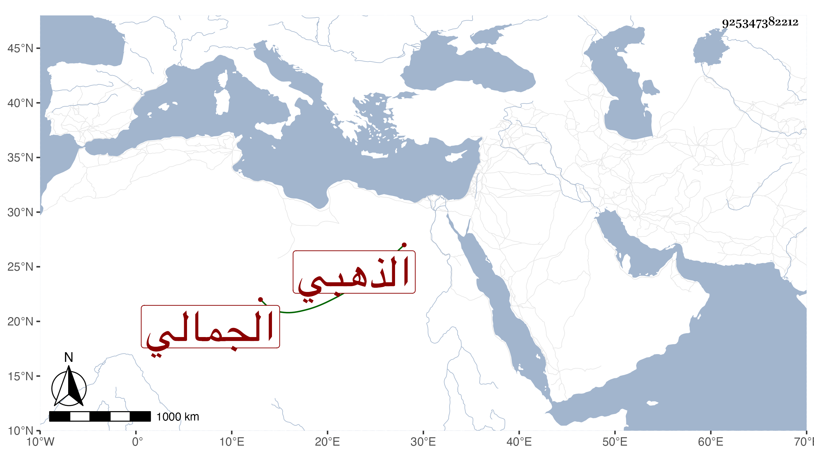

0902Sakhawi.DawLamic.ITO20230111-ara1.EIS1600.925347382212
Biography ID: 925347382212
708
عبد القادر بن شاهين الجمالي الذهبي سبط الشمس محمد بن أحمد بن محمد ابن أحمد البيري الآتي وانتسب جماليا لأخيه . كان خيرا راغبا في زيارة الصالحين وشهود مجالس الخير مع التكسب والتقنع والقراءة تبرعا مع القراءة في المشاهد وهو ممن أكثر الحضور عندي في الأمالي وغيرها مات سنة بضع وثمانين بعد منام رآه دل لذلك رحمه الله .
